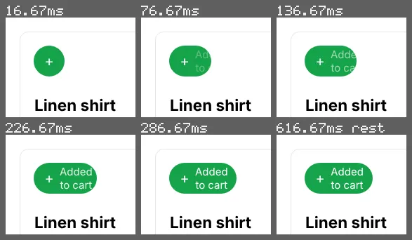

inspect motion --expect-lines
A button label that wraps while the button widens
A round add button that widens into a pill reading "Added to cart" over 300ms, its height fixed at 44px. The brief says the label stays on one line.
Open the page under test · fixtures/motion-authoring/v2/mutants/label-wrap.html
Run it
vlmkit inspect motion fixtures/motion-authoring/v2/mutants/label-wrap.html --click .add --selector .add --expect-lines 1 --frames {out}/f
vlmkit snapshot strip --manifest {out}/f/frames.json --max-frames 6 --columns 3 --crop 0,0,185,142 --out {out}/strip.png
What to look at
Each frame counts the lines of the target's text from its line boxes. Without white-space: nowrap the label wraps as soon as it appears, and the width the script measures from it is the wrapped one, so it stays on two lines at rest too.
The fix
white-space: nowrap on the button, so the label keeps one line and the width read from it is the label's own.
What vlmkit printed
vlmkit inspect motion fixtures/motion-authoring/v2/mutants/label-wrap.html --click .add --selector .add --expect-lines 1 --frames {out}/f · exit 1 — the command fails, as a gate in CI would
inspect motion: fixtures/motion-authoring/v2/mutants/label-wrap.html — 11 frames over 17..317ms + 1 at rest (<out>/f/frames.json)
target ".add", begins at 17ms, runs 300ms: travels 26px rightwards over the frames measured (its centre: its box grows 53px from its left edge, which stays put at x = 40), follows ease-out exactly (measured: no other curve comes close)
frames (time, share of its on-screen part seen [op = opacity, on-screen = share of its box in the viewport, when partial], centre): 17ms 1.00 (62,62), 47ms 1.00 (66,62), 77ms 1.00 (70,62), 107ms 1.00 (74,62), 137ms 1.00 (77,62), 167ms 1.00 (80,62), 197ms 1.00 (83,62), 227ms 1.00 (85,62), 257ms 1.00 (87,62), 287ms 1.00 (88,62), 316ms 1.00 (88,62), 617ms 1.00 (89,62)
FAIL lines-mismatch at 17ms: its text runs to 2 lines at 17ms, not 1: white-space: nowrap keeps it on one line, and the box needs room for it at rest (its width from the text's, not a wrap's)
1 fail; measured from the page, no model asked (--jev adds Jev's reading and the --forbid statements)
look at the frames: vlmkit snapshot strip --manifest <out>/f/frames.json --max-frames 6 --columns 3 --crop 0,0,185,142 --out <out>/f/strip.png
the first fail's own frame (17ms, .add lines-mismatch): <out>/f/0000-t000017.png
report: <out>/f/motion-report.json
vlmkit snapshot strip --manifest {out}/f/frames.json --max-frames 6 --columns 3 --crop 0,0,185,142 --out {out}/strip.png · exit 0
Strip Frames: 6 (2 row(s) x 3 column(s)) Sheet: 587x342 png <out>/strip.png